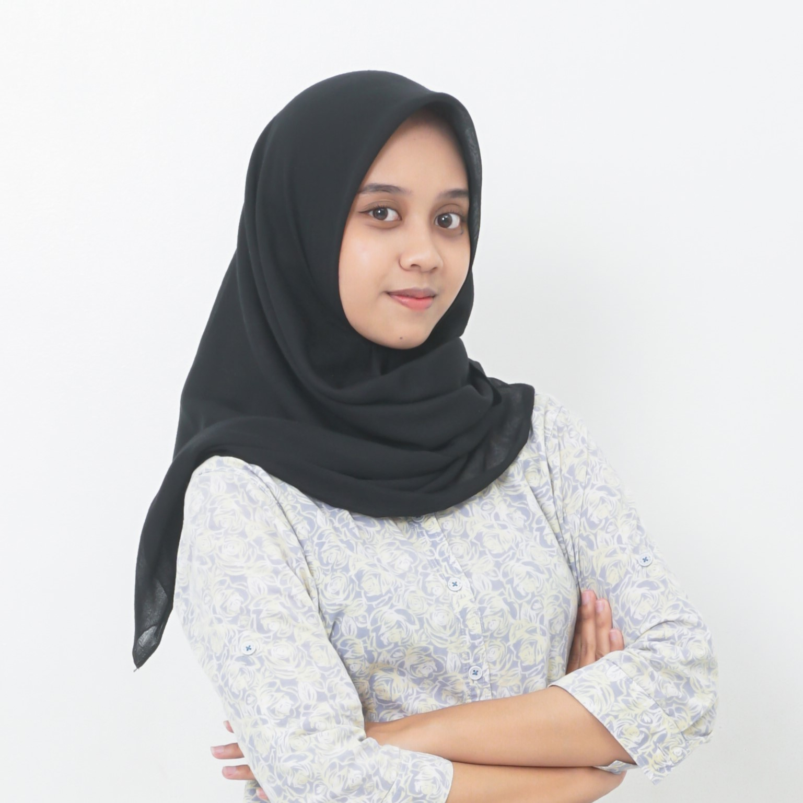

My Biodata˚⋆｡˚
Home
Contact
My Gallery

Syifa Ayu Salsabila Putri
Tempat, tanggal lahir
:
Samarinda, 22 Desember 2003
Alamat
:
Jl. M. Said 10, Loa Bahu, Sei. Kunjang,
Samarinda, Kalimantan Timur
Agama
:
Islam
Status
:
Belum menikah